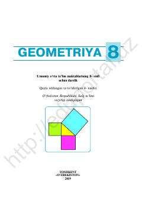

G88-sinf o‘quvchilari uchun mo‘ljallangan geometriya fanidan darslik.
Ushbu darslik umumiy o‘rta ta’lim maktablarining 8-sinf o‘quvchilari uchun mo‘ljallangan bo‘lib, geometriya fanining asosiy tushunchalarini qamrab oladi. Kitobda nazariy ma’lumotlar, masalalar yechish namunalari, tarixiy faktlar va o‘quvchilarni mustaqil ishlashga undovchi topshiriqlar keltirilgan.